11 Chatting with Papers - the mixed use of LLM’s and semantic artifacts to support the understanding of science dynamics
Overview
To address the profound challenge of managing and comprehending vast quantities of scientific information, the authors have engineered an artificial intelligence solution comprising the Ghostwriter interface and the EverythingData backend. This system enables users to interact with a curated collection of academic papers through natural language queries, functioning as a sophisticated information retrieval tool. Its core methodology extends Retrieval Augmented Generation (RAG) by integrating knowledge graphs, a technique the team has termed ‘GraphRAG’, to deliver more contextual and accurate results.
The workflow commences by ingesting documents, such as a test collection of 100 articles scraped from the mda journal, into a processing pipeline. This pipeline deconstructs the full-text articles, splits them into identifiable blocks, and performs both term extraction and embedding construction. A key innovation involves linking extracted entities to the Wikidata knowledge graph, which enriches the semantic context and furnishes stable, multilingual identifiers for concepts.
All processed information populates a vector store managed by Quadrant, creating a queryable vector space. When a user poses a question, the system retrieves the most relevant text segments, generates a coherent summary, and crucially, provides direct references to the source documents. This design choice effectively prevents AI ‘hallucination’. The architecture supports multilingual queries and is designed to run locally on standard hardware using a compact one-billion-parameter LLM, ensuring complete user control and data privacy.
11.1 The Challenge of Information Overload
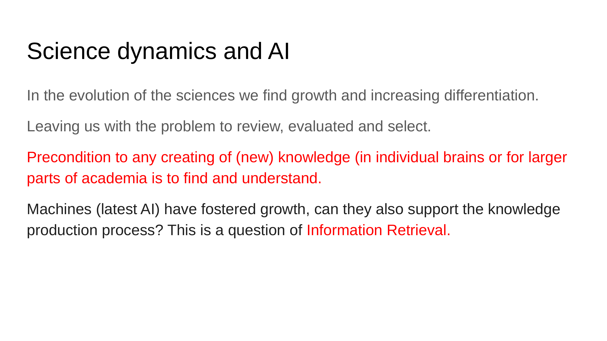
Scientific progress confronts a significant obstacle in the escalating volume of published information, a deluge that threatens to overwhelm the modern researcher. Effectively navigating this information landscape through advanced retrieval techniques is a fundamental prerequisite for generating new knowledge. This project explores how artificial intelligence can assist in this process, stemming from experimental work on complex data pipelines conducted at Dans. The authors sought to apply these technical frameworks to a practical use case, aiming to demonstrate their capabilities in a manner that is both powerful and comprehensible to a broader audience.
11.2 Research Question and System Design
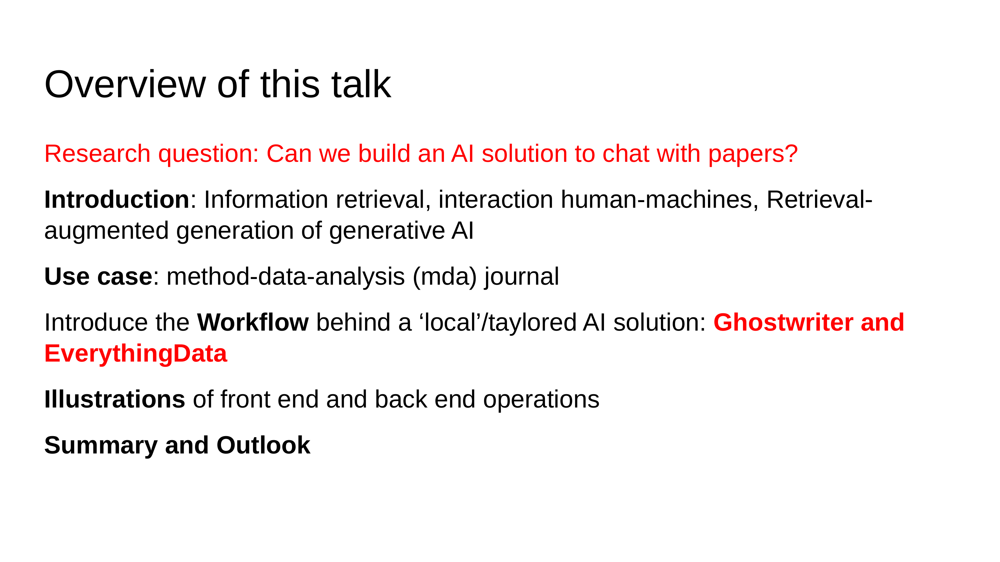
The investigation centres on a precise research question: is it feasible to construct an AI solution that enables a conversational interaction with a selected corpus of academic papers? To explore this, the authors engineered a system with two principal components. Ghostwriter functions as the user interface, providing the conversational layer for posing queries. Supporting this is EverythingData, a term encompassing the entire backend architecture responsible for data ingestion, processing, and retrieval.
11.3 The Ghostwriter Approach
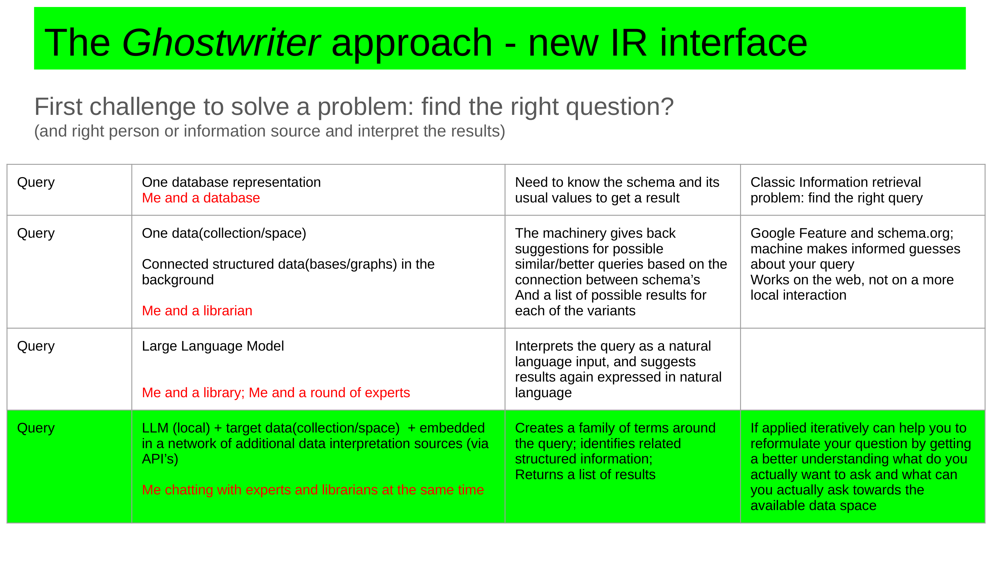
The Ghostwriter interface embodies a new paradigm for information retrieval, directly addressing the twin challenges of formulating precise questions and identifying relevant sources. The system’s design rests on a powerful metaphor that simplifies its operation: it allows a user to converse simultaneously with two conceptual entities. The ‘librarian’ persona represents the world of structured data, including formal knowledge organisation systems and established classifications. In contrast, the ‘expert’ persona embodies the domain of pure natural language. Ghostwriter’s central proposition is its ability to unify these two modes of interaction, providing a single, coherent conversational experience.
11.4 Graph-Augmented Generation
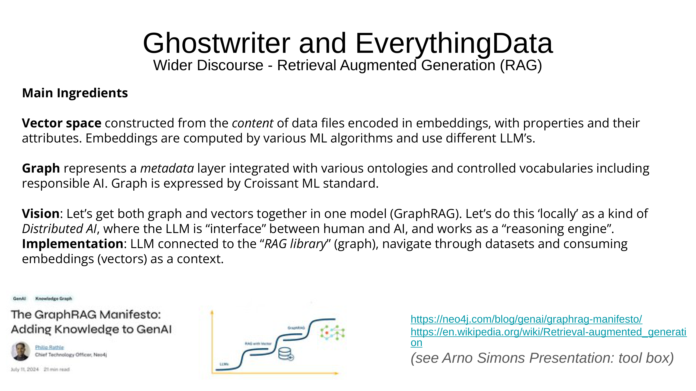
The authors position their work within the scientific discourse of Retrieval Augmented Generation (RAG), a prominent technique for enhancing language models with external knowledge. For a thorough introduction to this topic, a paper by Philip Rustle from Neo4j is recommended. The system’s architecture combines two fundamental ingredients: a vector space for semantic similarity searches and a graph for representing structured relationships. This fusion results in what the team terms ‘GraphRAG’, an implementation that functions as a sophisticated reasoning engine.
11.5 System Architecture
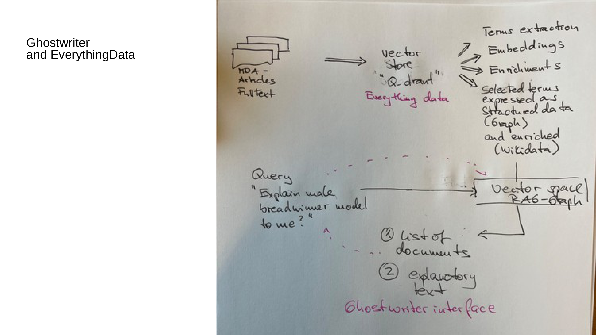
The system’s architecture processes document collections into a highly structured, queryable resource. It begins by ingesting a set of articles, for instance from the mda journal, into the EverythingData backend. This pipeline first employs the Quadrant engine to populate a vector store, then executes operations such as term extraction and the construction of semantic embeddings. A crucial innovation lies in coupling this vector store with knowledge graphs. This integration enriches the embeddings with structured relationships, adding a deeper layer of context. The final output is a sophisticated vector space, augmented with a graph structure, that users can query with natural language questions. In response, the system delivers both a generated summary and a precise list of the source documents used to formulate the answer.
11.6 Implementation and Local Deployment
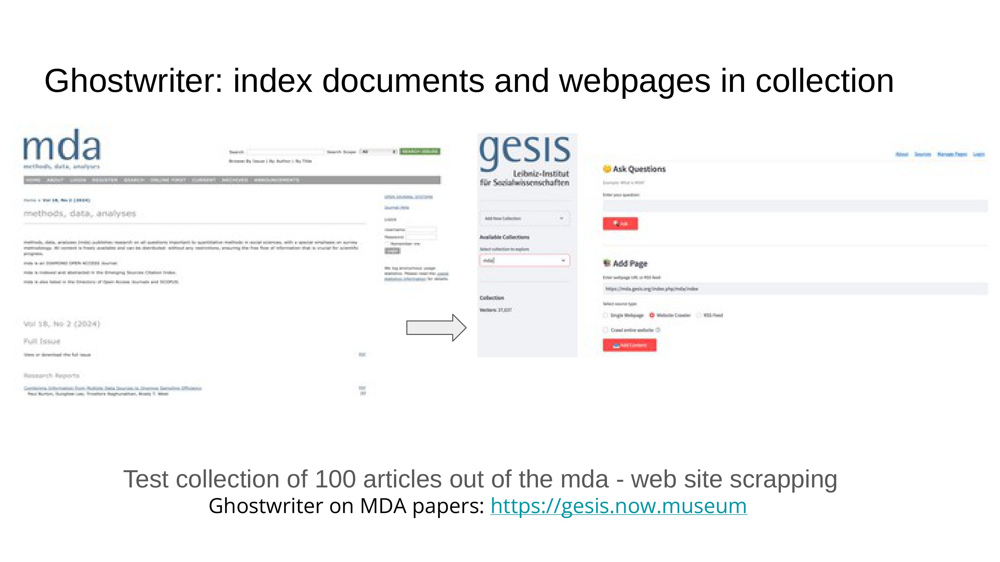
The authors implemented the system to be versatile, capable of processing diverse web content including academic papers and spreadsheets. It operates using a lean one-billion-parameter Large Language Model, prioritising efficiency and local deployment. A core design principle is its commitment to factual grounding; the system exclusively uses the provided source material to generate answers, thereby preventing hallucination. If the required information is absent from its knowledge base, it explicitly states its inability to answer. For demonstration, a curated collection of 100 articles from the GESIS mda journal was created via web scraping. This highlights another key feature: the system begins with no knowledge and builds its expertise only from the documents users add to its collection.
11.7 Source-Referenced Answer Generation
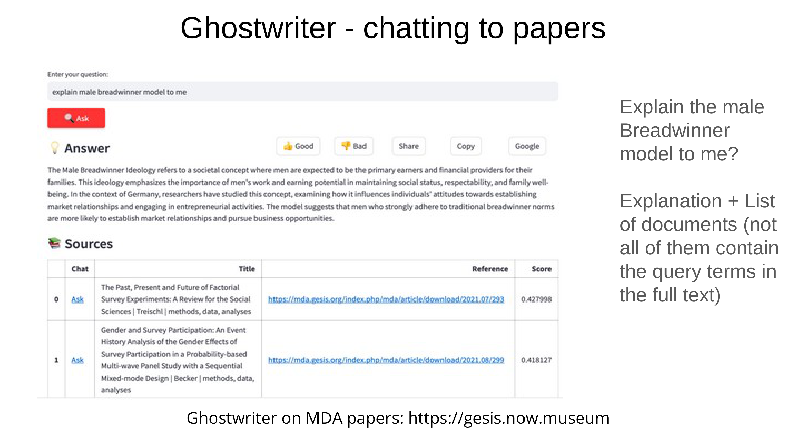
The system’s ability to generate reliable, source-backed answers is central to its design. When presented with a query, such as a request to explain the ‘male breadwinner model’, it produces a synthesised response accompanied by direct references to the source documents. This mechanism effectively prevents hallucination by tying every piece of generated text to a specific origin. Technically, the authors achieve this by partitioning each paper into small, uniquely identified blocks. The retrieval process then employs a combination of LLM techniques and knowledge graph analysis to intelligently predict and retrieve the most relevant text blocks for answering the user’s question, applying weights to prioritise the best-fitting information.
11.8 Iterative Knowledge Building
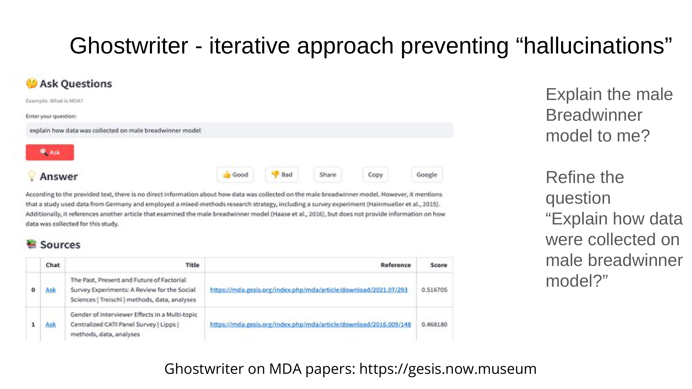
Rather than guessing, the system explicitly communicates its limitations by stating when no direct information is available to answer a query. This transparency is complemented by a feature for iterative knowledge building. An ‘add paper’ function empowers users to expand the system’s corpus directly. Consequently, if a user finds an answer in a document not yet in the collection, they can add it. The system will then successfully answer the same question on subsequent attempts, creating a dynamic and collaborative learning loop.
11.9 Knowledge Graph Construction
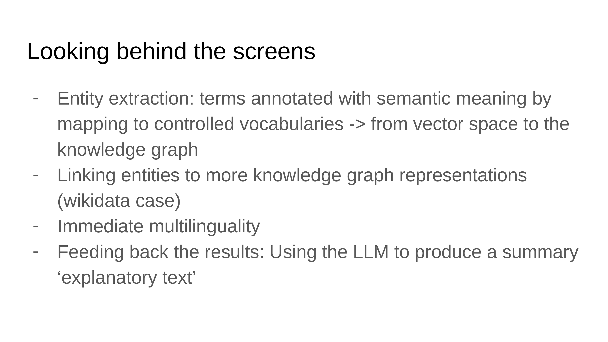
The system’s technical backbone is a multi-stage pipeline designed for robust knowledge construction. It begins with an entity extraction process that annotates key concepts within the source texts. Crucially, these entities are then linked to external knowledge graphs, which establish a ‘ground truth’ for validating information. This structure underpins the system’s powerful multilingual support, enabling a user to query documents in one language, such as German, using a different language, like English. In the final stage, the Large Language Model synthesises the various retrieved text fragments into a single, coherent summary for the user.
11.10 Hierarchical Knowledge Organisation
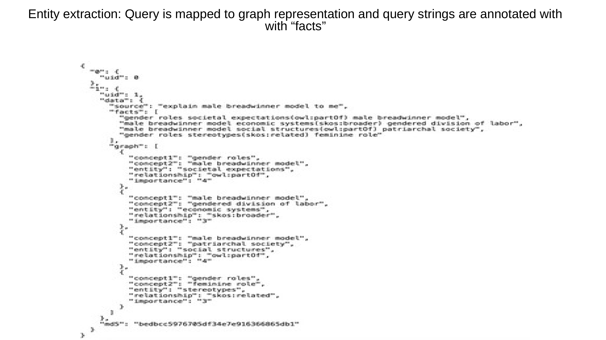
Fact extraction begins by deconstructing a user’s query into its constituent conceptual pieces. This procedure is part of a repeatable framework the authors describe as a knowledge organisation system. By applying this process iteratively, the system can generate progressively deeper and more detailed layers of information beneath a given term. This creates a rich, hierarchical representation of concepts, allowing for nuanced exploration of the subject matter.
11.11 Entity Linking with Wikidata
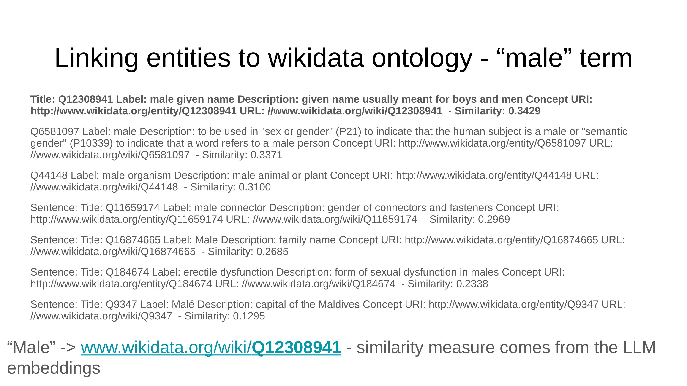
To ensure consistency and enable cross-lingual capabilities, the system links extracted entities to the Wikidata knowledge base. This critical step converts potentially ambiguous text strings into stable, language-agnostic identifiers. Because each Wikidata identifier is connected to a network of multilingual translations and structured properties, the system can correctly interpret queries across different languages. The authors describe this mechanism as being analogous to a Transformer model, but one that is grounded in the structured knowledge of Wikidata.
11.12 Cross-Lingual Query Expansion
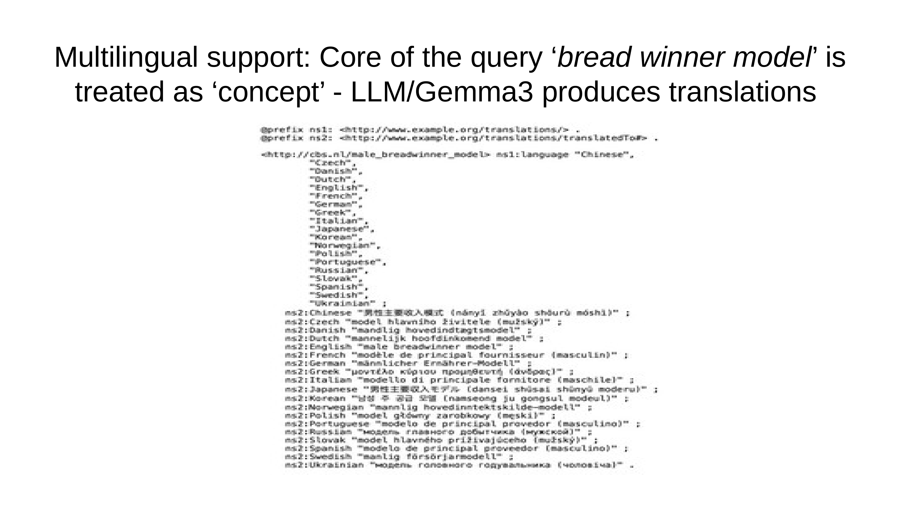
The system’s multilingual functionality is powered by a comprehensive query expansion process. For a given concept, such as the ‘bread winner model’, the system generates translations across hundreds of languages. This expanded set of multilingual terms, rather than just the original English phrase, constitutes the full query submitted to the Large Language Model. This ensures that relevant information is retrieved regardless of the language in which it was written.
11.13 A Decoupled Knowledge System
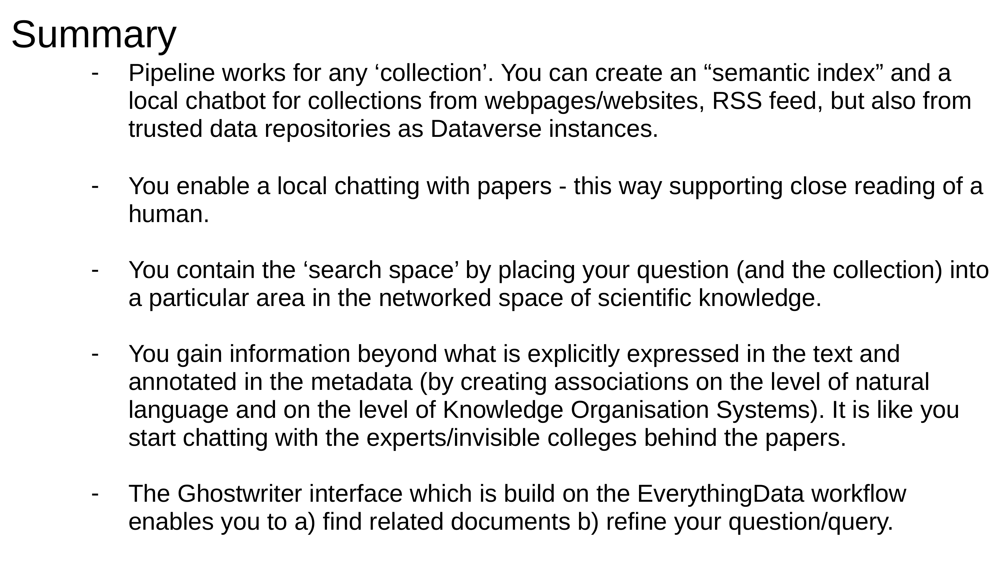
A key architectural decision was to decouple the extracted knowledge from the language models that process it. By converting queries into lists of stable Wikidata identifiers, the system creates an external, model-agnostic knowledge base. This separation provides a powerful method for benchmarking; one can evaluate any LLM, including those developed in the future, by assessing its ability to generate the correct set of identifiers for a specific query. The authors propose this knowledge organisation system as a sustainable foundation for the next generation of scientific tools, an effort being pursued in collaboration with industry partners like Google and Meta.
11.14 Demonstration and Concluding Vision
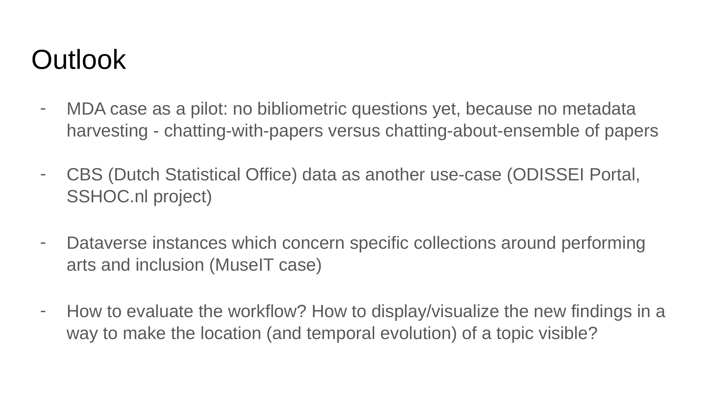
A live demonstration showcased the system’s capabilities. A query for ‘rational choice theory’ returned a broad summary with references, whilst a more specific query about ‘utility in rational choice theory’ generated a focused answer using different information from the same sources. The system’s multilingual prowess was proven by successfully answering a question in English about a paper written almost entirely in German.
Beyond manual use, an API enables the construction of automated agentic workflows. The overarching vision is for the tool to serve as a local, controllable resource that facilitates a dialogue with scientific literature—akin to chatting with an ‘invisible college’. Its ultimate purpose is not to replace human intellect but to provoke and support the researcher’s own thought process.